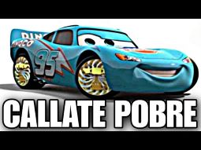

Pies contentos y fuertes es nuestro lema!
|
Productos garantizados por su calidad, nos respalda la evauacion de nuestros clientes y 30 anios de trayectoria Nuestros pilares son:
|
Amo mucho a mi tilina, estoy muy orgulloso de lo que hace y su fuerza |
Aqui esta el video de yutub |